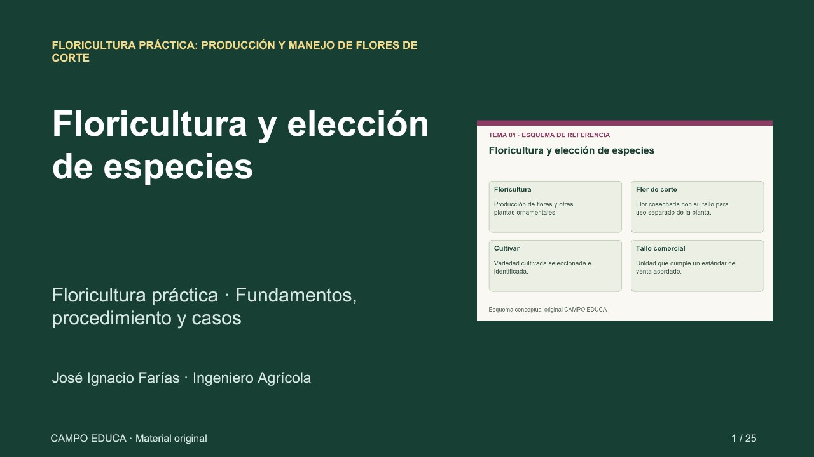

Floricultura: selecciona especies y planifica el espacio
Ocho diapositivas reales del tema 1. Es un extracto del curso; los datos numéricos son simulados. No requiere cuenta.

Piensa en dos especies y un cliente posible. ¿Qué información del clima, cultivar y conservación necesitas verificar antes de plantar?
Consultar por WhatsApp ↗